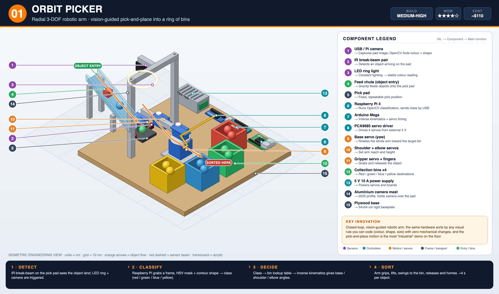
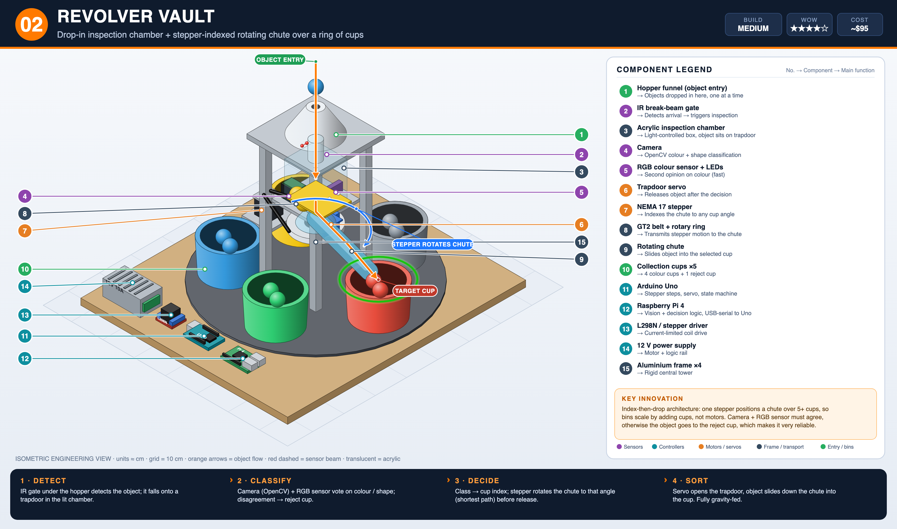
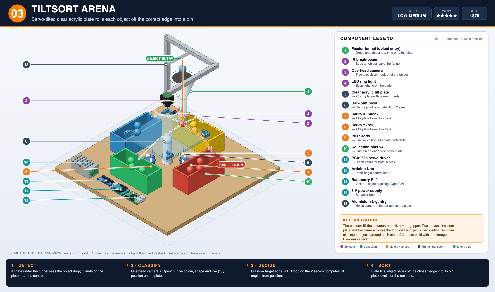
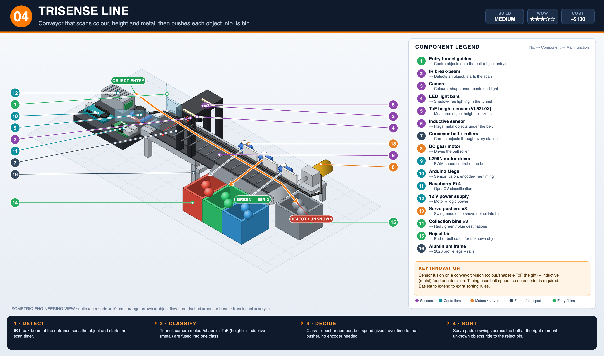
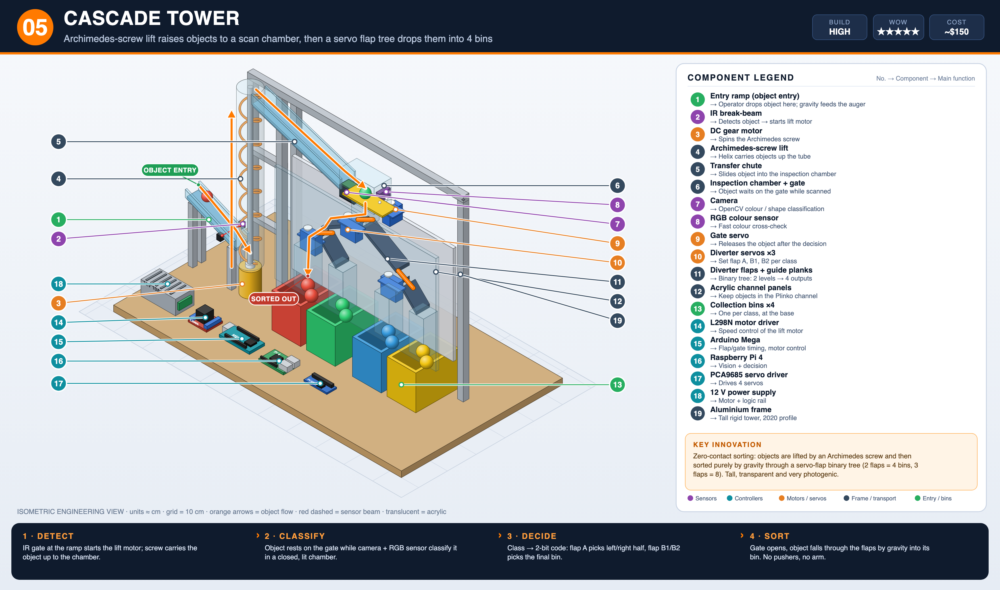
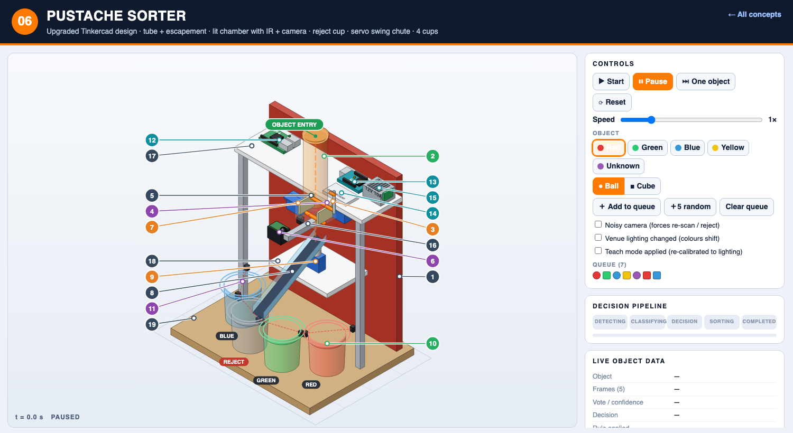

Smart Sorting Systems – 5 concepts (IEEE IES Day Jordan 2026)
Assumption: small 2.5–4 cm objects (balls, cubes, caps) sorted mainly by colour, optionally shape/height/metal. The competition rules were not provided; adapt dimensions and classes once they are known.
New: interactive working simulations. All five concepts are now fully working simulations - open any from its section below.
What makes a system stand out
- Complete pipeline that visibly works end to end: detect → classify → decide → move.
- Reliability beats complexity: judges reward a system that sorts 20/20 objects.
- One clear original idea, explainable in 10 seconds.
- Visual impact: transparent parts, moving mechanisms, a live camera view on screen.
- Buildable by students in weeks with acrylic, 2020 profile, plywood and 3D prints.
Scorecard (1–10, my estimate)
| Concept | Innovation | Reliability | Ease | Visual | Pipeline | Total |
|---|
| 01 Orbit Picker | 8 | 6 | 5 | 8 | 9 | 36 |
| 02 Revolver Vault | 8 | 9 | 7 | 8 | 9 | 41 |
| 03 TiltSort Arena | 9 | 7 | 8 | 10 | 8 | 42 |
| 04 TriSense Line | 6 | 9 | 8 | 7 | 9 | 39 |
| 05 Cascade Tower | 9 | 6 | 5 | 10 | 9 | 39 |
Recommendation: Revolver Vault (best reliability + originality) as the main entry; TiltSort Arena if time or budget is tight.
01 · Orbit Picker
Radial 3-DOF robotic arm picks each object from a pad and places it in a ring of bins.
▶ Open interactive simulation

- How it works
- IR break-beam detects the object on the pad → LED ring + camera trigger → Raspberry Pi (OpenCV HSV + contour shape) classifies → class→bin table + inverse kinematics on Arduino Mega → servos grip, swing, release, home.
- Sensing & classification
- Camera, IR break-beam, LED ring; OpenCV colour/shape
- Sorting mechanism
- Base yaw servo + shoulder/elbow servos + gripper servo
- Main hardware
- Pi 4, Arduino Mega, PCA9685, 3×MG996R + 1 micro servo, 5 V 10 A PSU, 2020 profile mast, plywood base, 4 bins
- Key innovation
- Any visual rule can be coded with no mechanical change; most “industrial” demo.
- Build complexity
- Medium-high: arm calibration and gripper tuning take the most time.
02 · Revolver Vault
Object drops into a lit inspection chamber; a stepper-indexed rotating chute delivers it to one of 5 cups.
▶ Open interactive simulation

- How it works
- IR gate under hopper → object lands on trapdoor → camera + RGB sensor vote (disagree = reject) → stepper rotates chute to the cup angle → servo opens trapdoor → gravity slide.
- Sensing & classification
- Camera + TCS34725-type RGB sensor, IR gate
- Sorting mechanism
- NEMA 17 + GT2 belt rotating ring; trapdoor servo
- Main hardware
- Uno, Pi 4, stepper driver, NEMA 17, micro servo, acrylic chamber, 5 cups, aluminium posts
- Key innovation
- Bins scale by adding cups; dual-sensor agreement makes it very reliable.
- Build complexity
- Medium: only one real mechanism (rotary ring), little to jam.
03 · TiltSort Arena
Two servos tilt a clear acrylic plate; the object rolls off the correct edge into a bin.
▶ Open interactive simulation

- How it works
- IR gate sees the drop → overhead camera tracks colour and live (x,y) → class→edge → PD loop sets tilt angles → plate tilts, object slides into bin, plate levels.
- Sensing & classification
- Overhead camera, LED ring, IR gate
- Sorting mechanism
- 2 servos + push-rods on a ball-joint pivot
- Main hardware
- Uno, Pi 4, PCA9685, 2 servos, 28 cm acrylic plate, ball joint, 4 bins, L-gantry
- Key innovation
- The platform is the actuator: no belt, arm or gripper. Cheapest, most dramatic demo.
- Build complexity
- Low-medium: needs low-friction plate and servo tuning; keep objects round or smooth.
04 · TriSense Line
Conveyor with vision, height and metal sensing; servo paddles push objects into bins.
▶ Open interactive simulation

- How it works
- IR beam at entry → tunnel scan (camera colour/shape + ToF height + inductive metal) fused into one class → belt-speed timing picks the pusher → paddle pushes; unknown rides to reject bin.
- Sensing & classification
- Camera, VL53L0X ToF, inductive sensor, IR beam
- Sorting mechanism
- DC gear motor belt + 3 servo pushers
- Main hardware
- Mega, Pi 4, L298N, gear motor, 3 servos, belt + rollers, 2020 profile, 4 bins
- Key innovation
- Multi-attribute sorting (colour + size + material) on the most practical architecture.
- Build complexity
- Medium: belt tracking and pusher timing are the fiddly parts.
05 · Cascade Tower
Archimedes-screw lift raises objects to a scan chamber; a servo flap tree sorts them by gravity into 4 bins.
▶ Open interactive simulation

- How it works
- IR gate starts the lift motor → screw carries object up → chamber gate holds it while camera + RGB classify → 2-bit code sets flaps A and B1/B2 → gate opens, object falls into its bin.
- Sensing & classification
- Camera, RGB sensor, IR gate
- Sorting mechanism
- DC gear motor auger; gate servo; 3 flap servos
- Main hardware
- Mega, Pi 4, L298N, PCA9685, gear motor, 4 servos, acrylic channel, 3D-printed auger
- Key innovation
- Zero-contact sorting through a transparent Plinko-style tree; very photogenic.
- Build complexity
- High: auger fit/jamming and tall frame are the risks.
06 · Pustache Sorter (upgraded Tinkercad design)
Your Tinkercad tower made competition-ready: feed tube + two-pin escapement (one object at a time), lit inspection chamber with IR beam and camera, HSV vote with a reject cup, servo swing chute over four cups.
▶ Open interactive simulation
⬡ Open 3D model (explode, parts list, STL download)

- How it works
- Objects queue in the tube → escapement releases exactly one → IR beam confirms entry → LED + camera capture 5 frames → majority vote and confidence check → unsure = one re-scan, then REJECT → Arduino aims the chute servo, opens gate G1 → object slides into the cup → IR drop-confirm.
- Sensing & classification
- Pi camera + OpenCV HSV vote, IR break-beam, IR drop-confirm per cup
- Sorting mechanism
- One servo swing chute over 4 cups on an arc; escapement servo; gate servo
- Main hardware
- Pi 4, Arduino Uno, 3 servos, LED strip, 5 IR pairs, camera, existing tube/shelves/cups
- Key innovation
- Reject path + teach mode for venue lighting + closed-loop drop confirmation.
- Build complexity
- Low-medium: three servos and simple printed parts; reuses your existing frame.